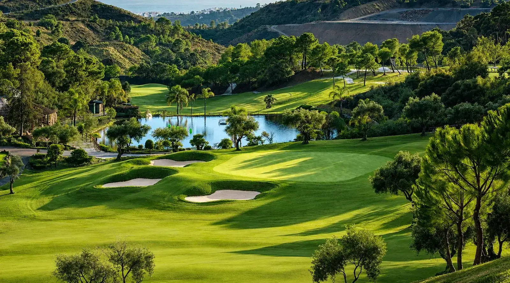
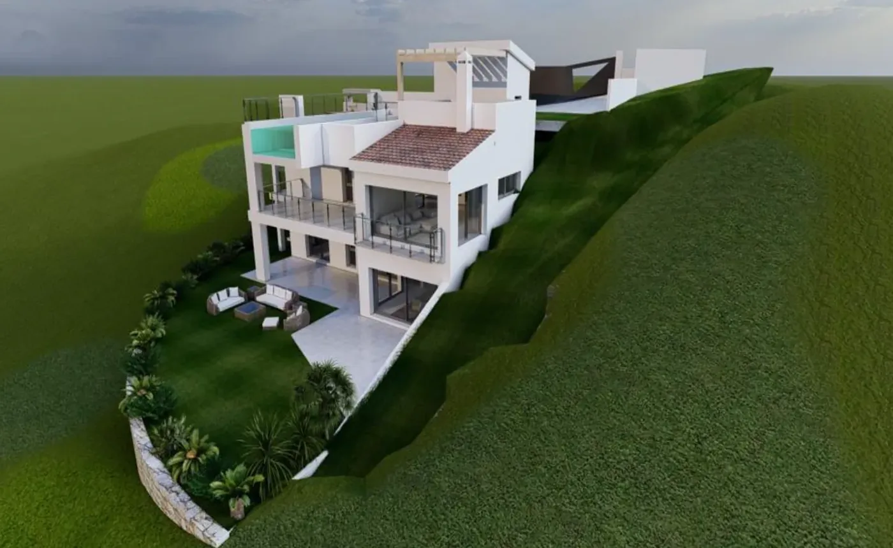

Diseñamos y construimos villas ecológicas a medida en toda la provincia de Málaga: Riviera del Sol, Mijas, Fuengirola, Benalmádena, Estepona y el interior. Más de 30 años levantando hogares passive house con certificación energética A+ adaptados al clima mediterráneo.
Trabajamos sobre plano o con licencia ya aprobada, acompañándote desde la elección del terreno hasta la entrega de llaves. Oficina en Riviera del Sol y almacén propio en Coín.

Orientación, sombras y ventilación cruzada diseñadas para el sol de Málaga: confort todo el año con un consumo hasta un 90% menor.
Dominamos la normativa urbanística de los municipios de la Costa del Sol y trabajamos con terrenos de la zona.
Aislamiento de altas prestaciones, carpintería de triple acristalamiento y materiales certificados que resisten la salinidad costera.
El clima de Málaga —veranos cálidos e inviernos suaves— es ideal para la tecnología passive house: una envolvente bien aislada y hermética mantiene la casa fresca en verano y templada en invierno casi sin climatización. Te ayudamos a aprovechar al máximo cada parcela con un diseño bioclimático único.
Cuéntanos tu idea y te preparamos una propuesta a medida sin compromiso.